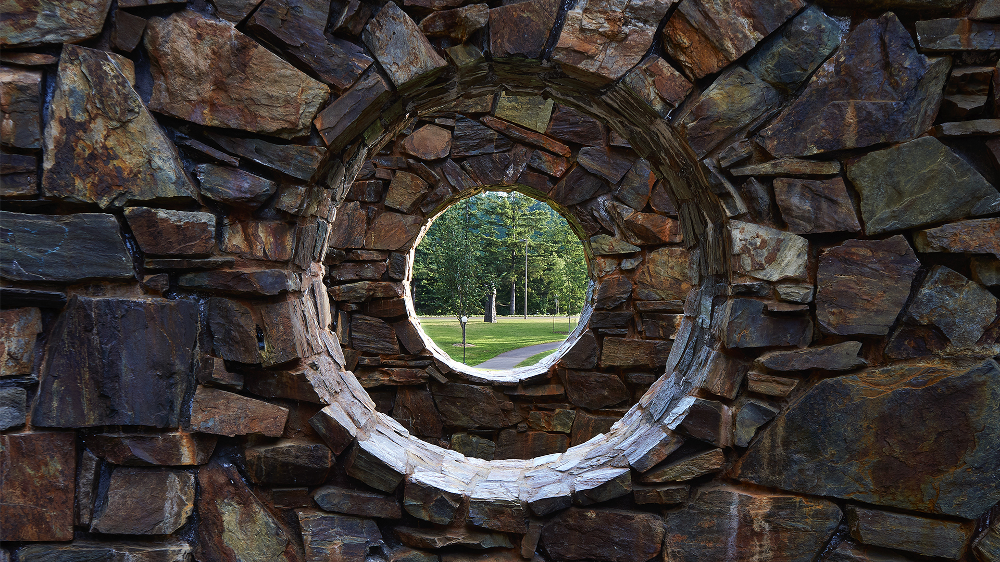

Mental Health
Check-In

Welcome to your much needed time of relaxation at the Nancy Holt, Stone Enclosure: Rock Rings.
This site is designed to make you reflect on how you're feeling and give you a few moments of mental rest while inside this beautiful gateway to another world.
To begin, please press the button below:
START